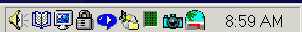

|
VAG-COM
Frequently Asked Questions
Page 2
Up
To FAQ Index
Q:
How do I Register/Activate my software?
A: Click here for complete instructions
Q:
What's the difference between the Shareware version
and the fully registered/activated version?
A: The differences between Shareware and fully
registered/activated versions are listed near the bottom of each function
page in the Manual.
Q:
Is Product Support included in the price?
A: Absolutely. If you have
a question or problem, please post it to the VAG-COM
mailing list, mail it to me
directly, or give me a call.
With VAG-COM you get support directly from the author of the program,
something you can't get with any competing package!
Q:
Why can't I get VAG-COM to communicate at all?
A: Check the following:
-
Is the adapter plugged into the car? An
adapter that is not plugged into the car will always be "Not
Found". It gets power from the car!
-
Is the car's ignition switch in the ON position?
-
Is it plugged into the correct serial port? Some
PC's have the ports mis-labeled.
-
Are the serial ports on
your PC properly configured?
-
Disable Palm-Pilot Synchronization
software!
-
If you have a 1997 or
newer car with an aftermarket radio, read
this page.
-
If all else fails, feel free to call me.
Q:
VAG-COM communicates, but it's "flaky"..
A: The diagnostic protocols require a degree of real-time response
from the diagnostic tool. Certain other programs and services can
prevent VAG-COM from responding in the timely fashion that the protocols
require. Some control modules are fussier about this than
others. Fixes:
If you have any other programs
running, close them. If you have any of the following active
on your computer, turn them off:
-
Virus Scanners
-
Task Scheduler
-
Microsoft Active-Synch
-
Some Novell Netware
network drivers
-
Power Management -- some
laptops are notoriously difficult, try running the laptop on AC power!
Other Tips:
-
Go through all the stuff
in your System Tray:

Right-Click on each little icon. If there's a
"Disable" or "Exit" option, do it!
-
Windows 2000 with
SP1: Install IE 5.5!
-
Some Windows
installations, especially ones that have had numerous program
installed and uninstalled over the years may be hopeless. Try
installing a clean copy of Windows in a different folder than the
original.
If all else fails, feel free to call me.
Q:
Why does my dash BEEP when I access my ABS controller?
A: In many of the newer models, there will be a series of BEEPs
from the dash when you access the ABS controller (and the ABS light will
be ON while you are talking to it). This perfectly normal and is
done to notify the driver that the ABS is non-functional while in
diagnostic mode.
Q:
Are there any Fault-Codes that can and should be ignored?
A: Yes. Most 1995 and earlier Bosch ECU's will show you a DTC
"00513 - Engine Speed Sensor (G28) if you scan them when the engine
is not running. This fault code goes away by itself once you
start the engine. If this sensor were truly defective, the
engine would not run at all! Please ignore this
code.
In addition, many Automatic Transmission Conrtol Modules will show a DTC
that indicates a faulty brake light switch. This can also be
ignored and will not appear if you press the brakes once before checking
for Fault Codes.
Q:
Are there any known Bugs / Problems / Issues?
A: Please check the Revision
History and Issues Page.
Q:
What's the Work Shop Code?
A: Every VW/Audi dealer in the world is assigned a
unique Work Shop Code. A brand-new factory VAG-1551/1552 or VAS-5051
scan tools will not function until a WSC is entered, and once it has been
entered, it cannot be changed. Whenever a Control Module is Re-Coded,
or certain Adaptations are
performed, the scan tool sends it's WSC to the control module and the
control module records it for posterity. Thus, if a scan-tool
is used to do something like disable certain airbags, in principle, it
should be possible to tell who (which dealer) did that.
Like the factory scan-tools, VAG-COM will accept a WSC once on the Options
Screen. If you enter a WSC there, it will be sent to the control
modules exactly like it's supposed to be. If you leave the WSC
on the Options Screen at it's default of 00000, VAG-COM will operate in
"stealth mode". Instead of sending a fixed WSC, it will
put back whatever was already in the control module, with one
exception: If it finds the "telltale" WSC (30011) that VWTool/VDS-PRO
likes to leave behind, VAG-COM will replace it with something more
innocuous.
Q:
What's with the DEBUG files?
A: VAG-COM uses these to record a lot of the data being exchanged between
the car and your PC. Having these can be very useful if there is
some sort of unexpected problem communicating with a controller in your
car. You can delete these at any time, but they will keep
coming back. The will not consume much space on your computer
because VAG-COM overwrites them every time you start a new session with
your PC. If you're having a problem, I may ask you to send me
a specific Debug file. The best way to send Debug files is to ZIP
them first.
Q:
Why are the CODES.DAT and DEBUG files encrypted?
A: Because I don't want to make
it too easy for someone to compete with me! :-)
I have
a large number of man-hours invested in creating that CODES file. It was
done by digging through every factory service manual I could get my hands
on and typing them all in (actually, my wife did most of that). If I
distributed it as plain text, someone else could easily adapt it for use
in their own program.
Note: the file CODES.DAT file is user-extensible.
You can add DTC's in plain text and the program will display them. Just
make sure you insert your additions in the right spot -- the DTC numbers
must remain in numerically ascending order as the program finds DTC's
using a binary search.
The debug files can record pretty much everything
that happens between the car and the PC. A program like VAG-COM is
actually fairly simple to write IF you understand the VAG diagnostic
protocol. No documentation is available for this protocol. I figured it
all out by watching what happens between the car and another scan-tool.
Again, a large investment in time, not to mention the ISO-9141 Data Line
Monitor I brought in from Germany. So I don't want everyone and his
brother to be able to see what happens between VAG-COM and the car. OTOH,
if you have a communications "glitch" with one of your
controllers, I do need to see what's happening, and encrypting the debug
files seemed like a good compromise.
More
Questions?
mailto:Uwe.Ross@pobox.com
VAG-COM
FAQ Index
VAG-COM
Home-Page
Ross-Tech
Home-Page
|